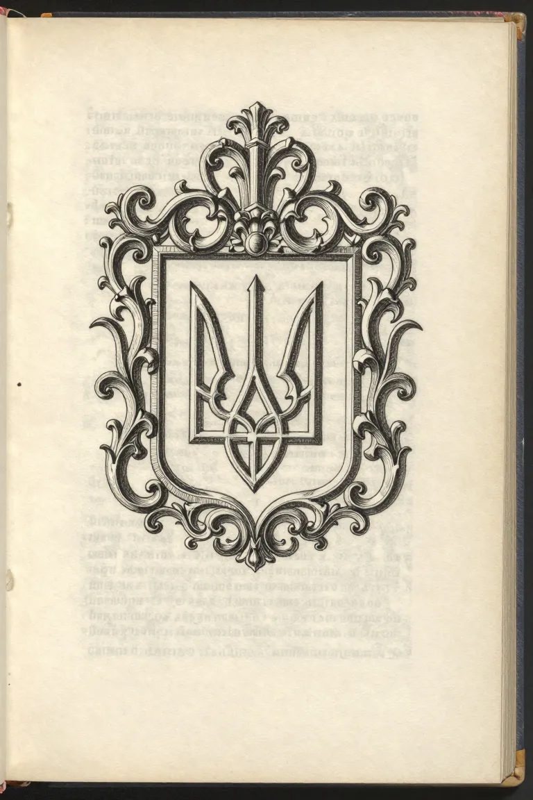

печать · 1910–1920 · также: Стиль Нарбута, Украинская барочная графика, Графіка Нарбута, Українська книжкова графіка
Чёрный рисунок пером с барочными заглавными буквами и геральдикой, напечатанный с цинковых штриховых клише, иногда с одним-двумя плоскими тонами. Плотный орнамент и рукописные буквы подражают старым гравированным украинским книгам.

Главная идея
Плотная чёрная линия пера и барочные буквы способны сделать современную обложку, похожую на страницу старой украинской книги.
Принципы дизайна
Рисуйте каждую форму тонкой линией пера 0,15–0,3 мм в размере оттиска, а тёмные места заливайте сплошным чёрным.
Набирайте заголовок рисованными от руки барочными заглавными; давайте каждой букве раздувающийся ствол и завитую ножку.
Помещайте заголовок, герб или главную фигуру в картуш из завитков, листьев и лент.
Берите геральдические формы (щит, корона, шлем, намёт) как главный мотив обложки или страницы.
Уравновешивайте чёрное и белое: пусть тяжёлые чёрные заливки лежат рядом с открытыми участками голой бумаги.
Берите один плоский красный или охристый тон как единственный цвет и кладите его на заголовок или щит.
Печатайте линию пера с цинкового штрихового клише, чтобы тончайшие волосные линии оставались резкими.
Антипаттерны
Мягкий тональный рисунок и градиент
Чистый современный гротеск в заголовке
Пастельные цвета и свободная акварель
Толстый тупой контур без тонких деталей
Страница без орнамента и без собственных рукописных букв